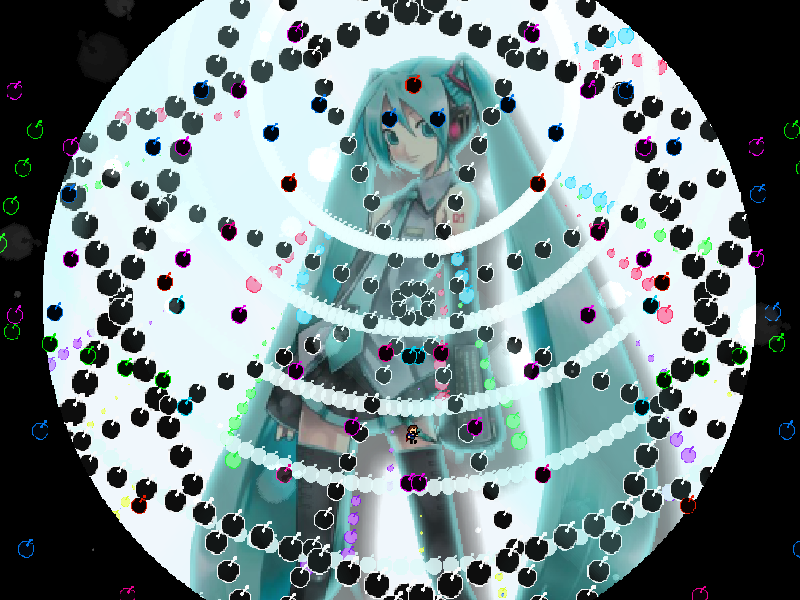
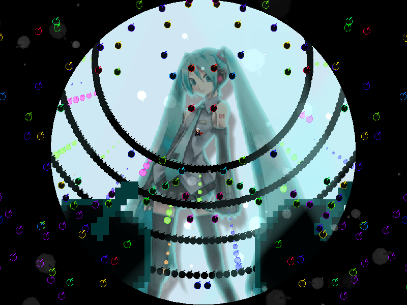

| creator | segment | label | jump |
|---|---|---|---|
| NN | 2:26.80~2:29.90 | R/Q | infinite |
自機狙いを題材とした弾幕です。
画面の左半分と右半分にそれぞれ周期的に生成される4方向に広がる放射状弾幕に関して、これらは生成時の角度について自機狙い状態と自機外し状態のいずれかをとり、また2発おき（左右同時に生成されるものを1発と数える）にどちらの状態をとるかが切り替わります。
なお、1発目に関しては必ず自機狙い状態をとります。
また、画面上部を中心とする同心円状弾幕に関して、2:29.80において完全に黒色に変化した時点で当たり判定が発生するため、その時点でいずれの層よりも内側に滞在している必要があります（fig.11-1.1）。
